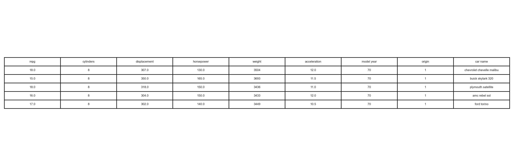
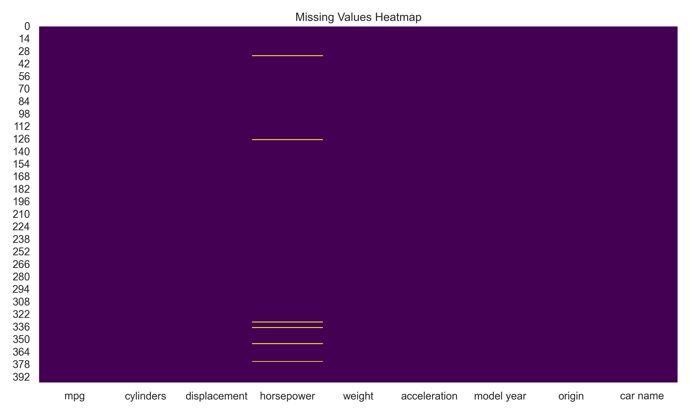
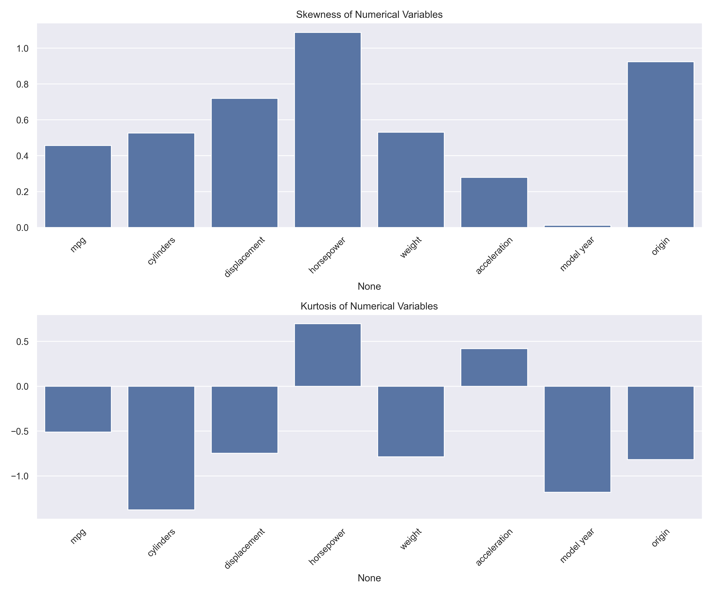
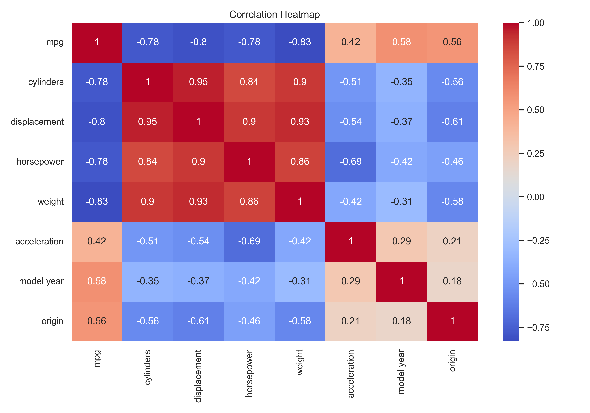
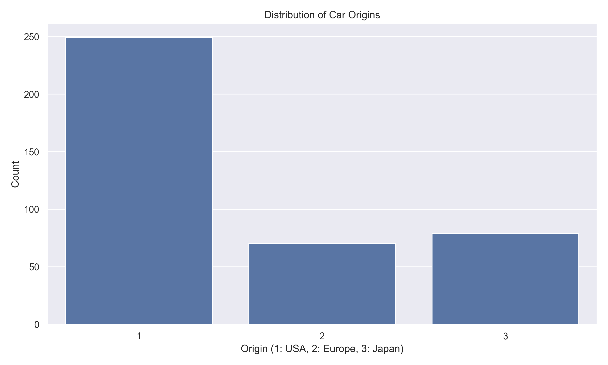

Unit 2 Seminar: EDA Tutorial
Overview
This seminar focused on Exploratory Data Analysis (EDA) using the Auto-mpg dataset. The tutorial covered various aspects of data analysis including:
- Identifying missing values
- Estimating Skewness and Kurtosis
- Creating Correlation Heat Maps
- Generating Scatter plots for different parameters
- Converting categorical values to numerical representations
Analysis Process
The analysis was conducted using Jupyter Notebook, which was accessed through the University of Essex Software Hub. The notebook provided a comprehensive environment for:
-
Data Loading and Initial Exploration
First, I loaded the Auto-mpg dataset and performed initial data exploration to understand its structure and content.
# Import necessary libraries import pandas as pd import numpy as np import matplotlib.pyplot as plt import seaborn as sns # Load the dataset df = pd.read_csv('auto-mpg.csv') print(df.head()) print("\nDataset shape:", df.shape) print("\nData types:\n", df.dtypes) First few rows of the Auto-mpg dataset -
Missing Values Analysis
Identified and analyzed missing values in the dataset, understanding their distribution and potential impact on the analysis.
# Check for missing values missing_values = df.isnull().sum() print("Missing values per column:\n", missing_values) # Visualize missing values plt.figure(figsize=(10, 6)) sns.heatmap(df.isnull(), cbar=False, cmap='viridis') plt.title('Missing Values Heatmap') plt.show() Missing Values Heatmap -
Statistical Analysis
Calculated key statistical measures including skewness and kurtosis to understand the data distribution.
# Calculate basic statistics print("Basic Statistics:\n", df.describe()) # Calculate skewness and kurtosis skewness = df.skew() kurtosis = df.kurtosis() print("\nSkewness:\n", skewness) print("\nKurtosis:\n", kurtosis) Statistical Analysis Results -
Visualization
Created various visualizations including correlation heat maps and scatter plots to identify relationships between variables.
# Create correlation heatmap plt.figure(figsize=(12, 8)) sns.heatmap(df.corr(), annot=True, cmap='coolwarm', center=0) plt.title('Correlation Heatmap') plt.show() # Create scatter plots plt.figure(figsize=(15, 10)) sns.pairplot(df, hue='origin') plt.show() Correlation Heatmap -
Data Preprocessing
Converted categorical variables to numerical representations for further analysis.
# Convert categorical 'origin' to numerical origin_mapping = {'america': 1, 'europe': 2, 'asia': 3} df['origin'] = df['origin'].map(origin_mapping) # Display the transformed data print("Transformed 'origin' column:\n", df['origin'].value_counts()) Transformed Data Distribution
{kind=link}
{kind=link}
{kind=link}
{kind=link}
{kind=link}
Key Findings
The analysis revealed several important insights about the Auto-mpg dataset:
- Missing values were found in the 'horsepower' column, requiring careful handling
- Strong correlations were observed between:
- MPG and weight (negative correlation)
- MPG and horsepower (negative correlation)
- Displacement and weight (positive correlation)
- The 'origin' variable showed distinct patterns in vehicle characteristics:
- American cars tended to be heavier and have higher horsepower
- European and Asian cars showed better fuel efficiency
- Statistical analysis revealed:
- Skewness in the horsepower distribution
- Kurtosis in the acceleration distribution
Reflection
The Unit 2 seminar on Exploratory Data Analysis (EDA) using the Auto-mpg dataset provided valuable hands-on experience in data analysis techniques. Working with real-world data, I learned to identify and handle missing values, particularly in the 'horsepower' column, and discovered the importance of visualization in understanding data distribution. The practical experience with Python libraries like pandas, numpy, and seaborn enhanced my ability to create and interpret visualizations, while the process of converting categorical data to numerical representations taught me the significance of careful data preprocessing. This seminar has given me a solid foundation in EDA techniques that will be essential for future machine learning projects, emphasizing the importance of thorough data exploration before modeling.